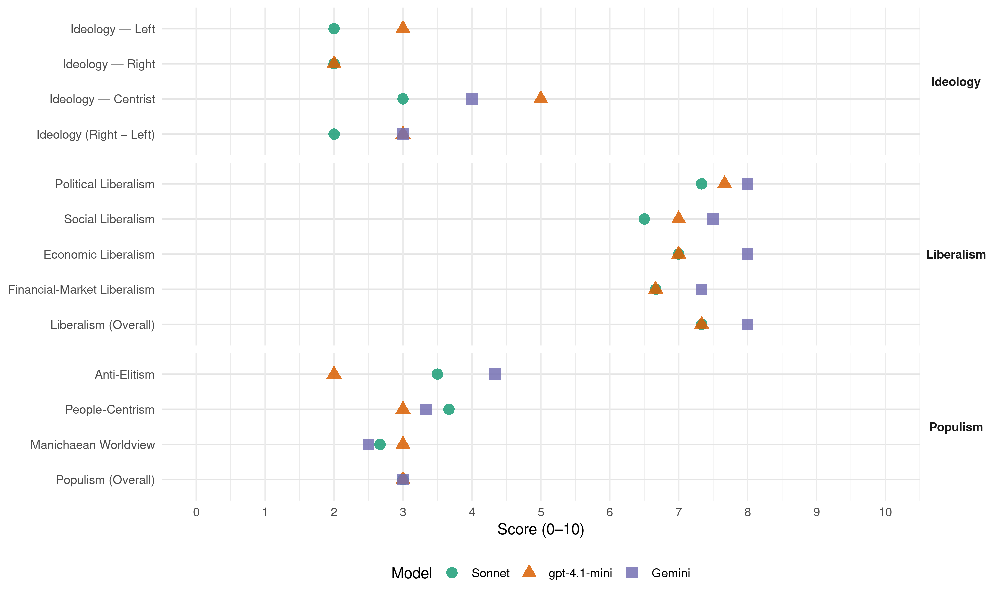

(Brazil, 2006)
manifesto_id 180310_200610
Get full text: This site shows derived annotations and short verbatim quotes only. The full manifesto text is © Manifesto Project / WZB — obtain it via manifesto-project.wzb.eu using the manifesto_id above.
Headline scores
| Dimension | Sonnet | gpt-4.1-mini | Gemini |
|---|---|---|---|
| Populism (Overall) | 3.0 | 3.0 | 3.0 |
| Anti-Elitism | 3.5 | 2.0 | 4.3 |
| People-Centrism | 3.7 | 3.0 | 3.3 |
| Manichaean Worldview | 2.7 | 3.0 | 2.5 |
| Ideology (Right − Left) | 2.0 | 3.0 | 3.0 |
| Liberalism (Overall) | 7.3 | 7.3 | 8.0 |
| Political Liberalism | 7.3 | 7.7 | 8.0 |
| Social Liberalism | 6.5 | 7.0 | 7.5 |
| Economic Liberalism | 7.0 | 7.0 | 8.0 |
| Financial-Market Liberalism | 6.7 | 6.7 | 7.3 |
Evidence per dimension
Economic Liberalism
Gemini · score 8.0 · verified · chunk 1
“estimular ao máximo a geração”
assim, a Politica econômica deve ser estruturada para estimular ao máximo a geração e incorporação de novos produtos
Gemini · score 8.0 · verified · chunk 2
“fortalecer os princípios da livre iniciativa”
será necessário: ../ Fortalecer os princípios da livre iniciativa em ambiente de justa competição.
Gemini · score 8.0 · verified · chunk 3
“reduzir o custo Brasil”
unificação e simplificação possível, para apoiar o exportador e reduzir o custo Brasil.
gpt-4.1-mini · score 7.0 · verified · chunk 1
“criar condições para zerar o déficit nominal”
O ajuste das contas públicas permitirá forte redução na dívida pública e, com ela, a diminuição permanente da taxa de juro, alcançando patamares semelhantes aos internacionais. A redução da taxa de juro constituirá o elemento central de indução ao crescimento da economia brasileira através da elevação do investimento.
gpt-4.1-mini · score 7.0 · verified · chunk 2
“reduzir a carga tributária e eliminar a desburocratização”
…Fortalecer a independência e a competência técnica do Órgão Regulador. ../ Conduzir o processo de atualização da legislação setorial, tornando-a compatível com a evolução da tecnologia e dos serviços. ../ Fortalecer os princípios da livre iniciativa em ambiente de justa competição. ../ Reduzir a carga tributária e eliminar a desburocratização dos processos para elevar a competitividade no setor. ../ Estabelecer política de incentivos à produção e à exportação de conteúdos, inclusive softwares e bens e serviços culturais…
gpt-4.1-mini · score 7.0 · verified · chunk 3
“Desonerar da carga tributária as exportações de bens e serviços”
../ Desonerar da carga tributária as exportações de bens e serviços. ../ Desonerar da carga tributária as exportações das empresas optantes pelo SIMPLES. -/ Dispensar de emolumentos, taxas e contribuições as exportações diretas ou indiretas das micro, pequenas e médias empresas.
Sonnet · score 7.0 · verified · chunk 1
“ambiente favorável aos negócios”
Criação de um ambiente favorável aos negócios. Diversos estudos de economistas brasileiros atestam para a baixa produtividade da economia brasileira.
Sonnet · score 7.0 · verified · chunk 2
“livre iniciativa em ambiente de justa competição”
Fortalecer os princípios da livre iniciativa em ambiente de justa competição
Sonnet · score 7.0 · verified · chunk 3
“Desonerar da carga tributária as exportações”
Desonerar da carga tributária as exportações de bens e serviços.
Financial-Market Liberalism
Gemini · score 7.0 · verified · chunk 1
“desenvolvimento de um sólido mercado de capitais”
Fundamental também é o desenvolvimento de um sólido mercado de capitais que proporcione recursos para empresas ampliarem
Gemini · score 8.0 · verified · chunk 2
“Desenvolver o mercado de capitais para apoio”
P&D empresarial. / Desenvolver o mercado de capitais para apoio à inovação, em particular incentivar
Gemini · score 7.0 · verified · chunk 3
“estabilização da moeda nacional”
importantes delas as que permitiram a estabilização da moeda nacional. Ainda assim
gpt-4.1-mini · score 7.0 · verified · chunk 1
“desenvolvimento de um sólido mercado de capitais”
Caberá ao setor financeiro papel central na articulação entre poupadores e investidores, desenvolvendo mecanismos de capitalização e crédito que permitam impulsionar a economia do país. Fundamental também é o desenvolvimento de um sólido mercado de capitais que proporcione recursos para empresas ampliarem sua base produtiva.
gpt-4.1-mini · score 6.0 · verified · chunk 2
“mercado de capitais e as PPPs -Parcerias Público-Privadas”
…Garantir a liberação de recursos públicos adequados ao cumprimento das metas. / Utilizar novos mecanismos de financiamento, como mercado de capitais e as PPPs -Parcerias Público-Privadas. / Desenvolver programa de saneamento rural com os estados. / Fazer parcerias com os estados para facilitar o atendimento de grande parte da necessidade nos próximos quatro anos…
gpt-4.1-mini · score 7.0 · verified · chunk 3
“Fortalecer o sistema de garantia e seguro de crédito”
Desburocratizar e simplificar os procedimentos para crédito à exportação, respaldado em linhas de crédito externas ou no PROEX Financiamento ou no PROEX Equalização. Fortalecer o sistema de garantia e seguro de crédito. Restabelecer o Convênio de Crédito Reciproco-CCR. Criar o módulo SISCOMEX-Serviços, para permitir melhor avaliação e percepção da abrangência e do potencial do setor.
Sonnet · score 7.0 · verified · chunk 1
“sólido mercado de capitais”
Fundamental também é o desenvolvimento de um sólido mercado de capitais que proporcione recursos para empresas ampliarem sua base produtiva.
Sonnet · score 7.0 · verified · chunk 2
“mercado de capitais para apoio à inovação”
Desenvolver o mercado de capitais para apoio à inovação, em particular incentivar a ação dos Fundos de Investimentos e valorizar mais os ativos intangíveis
Sonnet · score 6.0 · verified · chunk 3
“Fortalecer o sistema de garantia e seguro de crédito”
Desburocratizar e simplificar os procedimentos para crédito à exportação… Fortalecer o sistema de garantia e seguro de crédito.
Political Liberalism
Gemini · score 8.0 · verified · chunk 1
“garantia das instituições democráticas”
Reforma política e garantia das instituições democráticas A crise ética e política do PT
Gemini · score 8.0 · verified · chunk 2
“Assegurar a autonomia das agências reguladoras”
Geraldo Alckmin vai: ./ Assegurar a autonomia das agências reguladoras, capacitando-as e fortalecendo seu
Gemini · score 8.0 · verified · chunk 3
“fortalecer a democracia”
enfrentamento dos crimes transnacionais e fortalecer a democracia. PROPOSTAS
gpt-4.1-mini · score 8.0 · verified · chunk 1
“garantia das instituições democráticas”
A crise ética e política do PT e do governo atual - evidenciada nos episódios do “mensalão”, dos “sanguessugas”, do “cuecão”, entre tantos outros - obriga-nos a retomar a questão da reforma política por um novo ângulo e com um redobrado senso de urgência. O aparelhamento, hoje verificado, das instâncias estatais pelos partidos governistas e a corrupção entranhada na máquina Politica mais próxima à Presidência da República tratada como algo normal pelo atual governo-são fenômenos que representam, com enorme gravidade, potencial comprometimento das instituições democráticas.
gpt-4.1-mini · score 7.0 · verified · chunk 2
“autonomia, a liberdade acadêmica e o mérito são essenciais”
…que a Universidade cumpra seu papel de ser o centro do debate aberto e da crítica das ideias para formar as novas gerações no espirito científico. Mostra também a necessidade da presença de um Sistema Nacional de Ciência e Tecnologia forte, com capacidade para promover a articulação entre os vários atores, propor e coordenar ações e iniciativas com ministérios, estados e municípios. autonomia, a liberdade acadêmica e o mérito são essenciais ao funcionamento do sistema e imprescindíveis para que a Universidade cumpra seu papel de ser o centro do debate aberto e da crítica das ideias para formar as novas gerações no espirito científico. …
gpt-4.1-mini · score 8.0 · verified · chunk 3
“garantir a lei e a ordem pública, participar no enfrentamento dos crimes transnacionais e fortalecer a democracia”
À defesa nacional cabe garantir a soberania do pais, a integridade territorial, o patrimônio e os interesses nacionais, bem como assegurar a integração e a unidade nacional, garantir a lei e a ordem pública, participar no enfrentamento dos crimes transnacionais e fortalecer a democracia. PROPOSTAS ./ Garantir capacitação nacional para a dissuasão.
Sonnet · score 8.0 · verified · chunk 1
“consolidação de nossa democracia”
Impõe-se, como estratégia para reforçar a consolidação de nossa democracia, implementar novos e fundamentais passos de uma reforma Politica
Sonnet · score 7.0 · verified · chunk 2
“autonomia das agências reguladoras”
Assegurar a autonomia das agências reguladoras, capacitando-as e fortalecendo seu poder decisório, de normatização e de fiscalização
Sonnet · score 7.0 · verified · chunk 3
“fortalecer a democracia”
garantir a lei e a ordem pública, participar no enfrentamento dos crimes transnacionais e fortalecer a democracia.
Liberalism (Overall)
Gemini · score 8.0 · verified · chunk 1
“garantia das instituições democráticas”
Reforma política e garantia das instituições democráticas A crise ética e política do PT
Gemini · score 8.0 · verified · chunk 2
“fortalecer os princípios da livre iniciativa”
será necessário: ../ Fortalecer os princípios da livre iniciativa em ambiente de justa competição.
Gemini · score 8.0 · verified · chunk 3
“fortalecer a democracia”
enfrentamento dos crimes transnacionais e fortalecer a democracia. PROPOSTAS
gpt-4.1-mini · score 8.0 · verified · chunk 1
“garantia das instituições democráticas”
A crise ética e política do PT e do governo atual - evidenciada nos episódios do “mensalão”, dos “sanguessugas”, do “cuecão”, entre tantos outros - obriga-nos a retomar a questão da reforma política por um novo ângulo e com um redobrado senso de urgência.
gpt-4.1-mini · score 7.0 · verified · chunk 2
“autonomia, a liberdade acadêmica e o mérito são essenciais”
…que a Universidade cumpra seu papel de ser o centro do debate aberto e da crítica das ideias para formar as novas gerações no espirito científico. Mostra também a necessidade da presença de um Sistema Nacional de Ciência e Tecnologia forte, com capacidade para promover a articulação entre os vários atores, propor e coordenar ações e iniciativas com ministérios, estados e municípios. autonomia, a liberdade acadêmica e o mérito são essenciais ao funcionamento do sistema e imprescindíveis para que a Universidade cumpra seu papel de ser o centro do debate aberto e da crítica das ideias para formar as novas gerações no espirito científico. …
gpt-4.1-mini · score 7.0 · verified · chunk 3
“garantir a lei e a ordem pública, participar no enfrentamento dos crimes transnacionais e fortalecer a democracia”
À defesa nacional cabe garantir a soberania do pais, a integridade territorial, o patrimônio e os interesses nacionais, bem como assegurar a integração e a unidade nacional, garantir a lei e a ordem pública, participar no enfrentamento dos crimes transnacionais e fortalecer a democracia. PROPOSTAS ./ Garantir capacitação nacional para a dissuasão.
Sonnet · score 8.0 · verified · chunk 1
“consolidação da democracia”
Unir o Brasil em torno de um projeto nacional de desenvolvimento que conjugue de uma vez por todas democracia com ética, estabilidade com crescimento
Sonnet · score 7.0 · verified · chunk 2
“livre iniciativa em ambiente de justa competição”
Fortalecer os princípios da livre iniciativa em ambiente de justa competição
Sonnet · score 7.0 · verified · chunk 3
“Desonerar da carga tributária as exportações de bens e serviços”
Desonerar da carga tributária as exportações de bens e serviços. Desonerar da carga tributária as exportações das empresas optantes pelo SIMPLES.
Anti-Elitism
Gemini · score 5.0 · verified · chunk 1
“A crise ética e política do PT”
Reforma política e garantia das instituições democráticas A crise ética e política do PT e do governo atual - evidenciada nos episódios
Gemini · score 5.0 · verified · chunk 2
“principalmente, a inépcia do governo federal”
decisiva, a politica econômica vigente e, principalmente, a inépcia do governo federal, que não tornou
Gemini · score 3.0 · verified · chunk 3
“eliminação da corrupção, que lhes permite”
não estará completo sem a eliminação da corrupção, que lhes permite continuidade no tempo
gpt-4.1-mini · score 2.0 · verified · chunk 1
“crise ética e política do PT e do governo atual”
A crise ética e política do PT e do governo atual - evidenciada nos episódios do “mensalão”, dos “sanguessugas”, do “cuecão”, entre tantos outros - obriga-nos a retomar a questão da reforma política por um novo ângulo e com um redobrado senso de urgência.
Sonnet · score 4.0 · mixed · chunk 1
“corrupção entranhada na máquina Politica”
O aparelhamento, hoje verificado, das instâncias estatais pelos partidos governistas e a corrupção entranhada na máquina Politica mais próxima à Presidência da República tratada como algo normal pelo atual governo
Sonnet · score 3.0 · verified · chunk 2
“inépcia do governo federal”
a politica econômica vigente e, principalmente, a inépcia do governo federal, que não tornou, de pronto, enérgicas medidas corretivas
Sonnet · score 4.0 · verified · chunk 3
“corruptos e corruptores”
Toda a estrutura do Estado estará empenhada em acabar com corruptos e corruptores
Ideology — Centrist
Gemini · score 4.0 · verified · chunk 1
“soberania da vontade popular”
instrumento essencial para a garantia da prevalência da soberania da vontade popular. Em nosso sistema eleitoral, as ideologias
Gemini · score 5.0 · verified · chunk 2
“principalmente, a inépcia do governo federal”
decisiva, a politica econômica vigente e, principalmente, a inépcia do governo federal, que não tornou
Gemini · score 3.0 · verified · chunk 3
“colocar o Estado a favor e ao lado das pessoas”
O princípio orientador dessa mudança é colocar o Estado a favor e ao lado das pessoas.
gpt-4.1-mini · score 5.0 · verified · chunk 1
“Unir o Brasil em torno de um projeto nacional”
Unir o Brasil em torno de um projeto nacional de desenvolvimento que conjugue de uma vez por todas democracia com ética, estabilidade com crescimento, justiça social com boa gestão, esperança com mudança, é o sonho que inspirou minha geração.
Sonnet · score 3.0 · verified · chunk 1
“conciliação de interesses”
o programa econômico do governo Geraldo Alckmin foi concebido com objetivos e estratégias que buscam a conciliação de interesses, atendendo às principais demandas dos diferentes setores
Sonnet · score 3.0 · verified · chunk 2
“interesse nacional esteja acima”
uma perspectiva de médio e longo prazos, onde o interesse nacional esteja acima de visões conjunturais, ideológicas ou de governos que passam
Sonnet · score 3.0 · verified · chunk 3
“legítimos interesses das empresas e dos trabalhadores”
defendendo os legítimos interesses das empresas e dos trabalhadores brasileiros.
Ideology — Left
gpt-4.1-mini · score 3.0 · verified · chunk 1
“justiça social com boa gestão”
Unir o Brasil em torno de um projeto nacional de desenvolvimento que conjugue de uma vez por todas democracia com ética, estabilidade com crescimento, justiça social com boa gestão, esperança com mudança, é o sonho que inspirou minha geração.
Sonnet · score 2.0 · verified · chunk 1
“redução das desigualdades regionais”
o Brasil precisa crescer mais e de maneira mais equilibria, incluindo os mais pobres e diminuindo as desigualdades regionais
Sonnet · score 2.0 · verified · chunk 2
“inclusão social de uma parcela significativa”
e essencial para promover a inclusão social de uma parcela significativa da população pobre, pela geração sustentável de ocupação e renda
Sonnet · score 2.0 · verified · chunk 3
“incorporação de pequenas e medias empresas”
a ampliação da base exportadora com a incorporação de pequernas e medias empresas estão diretamente relacionadas
Ideology (Right − Left)
Gemini · score 3.0 · verified · chunk 1
“soberania da vontade popular”
instrumento essencial para a garantia da prevalência da soberania da vontade popular. Em nosso sistema eleitoral, as ideologias
Gemini · score 4.0 · verified · chunk 2
“principalmente, a inépcia do governo federal”
decisiva, a politica econômica vigente e, principalmente, a inépcia do governo federal, que não tornou
Gemini · score 2.0 · verified · chunk 3
“colocar o Estado a favor e ao lado das pessoas”
O princípio orientador dessa mudança é colocar o Estado a favor e ao lado das pessoas.
gpt-4.1-mini · score 3.0 · verified · chunk 1
“crise ética e política do PT e do governo atual”
A crise ética e política do PT e do governo atual - evidenciada nos episódios do “mensalão”, dos “sanguessugas”, do “cuecão”, entre tantos outros - obriga-nos a retomar a questão da reforma política por um novo ângulo e com um redobrado senso de urgência.
Sonnet · score 2.0 · verified · chunk 1
“crise ética e política do PT”
A crise ética e política do PT e do governo atual - evidenciada nos episódios do ‘mensalão’, dos ‘sanguessugas’
Sonnet · score 2.0 · verified · chunk 2
“interesse nacional esteja acima”
onde o interesse nacional esteja acima de visões conjunturais, ideológicas ou de governos que passam
Sonnet · score 2.0 · verified · chunk 3
“legítimos interesses das empresas e dos trabalhadores brasileiros”
Dirigir as negociações comerciais de forma pragmática… defendendo os legítimos interesses das empresas e dos trabalhadores brasileiros.
Ideology — Right
gpt-4.1-mini · score 2.0 · verified · chunk 1
“não haverá invasões. Se invadir, vai ter de”desinvadir”“
Garantir paz e segurança institucional e jurídica para o campo poder trabalhar. No governo de Geraldo Alckmin não haverá invasões. Se invadir, vai ter de “desinvadir” de imediato.
Sonnet · score 2.0 · verified · chunk 2
“soberania nacional”
com vistas a possíveis usos e a preservação da soberania nacional
Sonnet · score 2.0 · verified · chunk 3
“combate ao contrabando de armas”
Promover a articulação da Polícia Federal, Forças Armadas, polícias estaduais… combate ao contrabando de armas, ao tráfico de drogas
Manichaean Worldview
Gemini · score 3.0 · verified · chunk 2
“com o forte viés ideológico”
sofrendo sérios prejuízos com o forte viés ideológico que tem norteado a composição
Gemini · score 2.0 · verified · chunk 3
“empenhada em acabar com corruptos e corruptores”
Toda a estrutura do Estado estará empenhada em acabar com corruptos e corruptores COMBATE
gpt-4.1-mini · score 3.0 · verified · chunk 1
“corrupção entranhada na máquina Politica”
O aparelhamento, hoje verificado, das instâncias estatais pelos partidos governistas e a corrupção entranhada na máquina Politica mais próxima à Presidência da República tratada como algo normal pelo atual governo-são fenômenos que representam, com enorme gravidade, potencial comprometimento das instituições democráticas.
Sonnet · score 3.0 · verified · chunk 1
“crise ética e política do PT e do governo atual”
A crise ética e política do PT e do governo atual - evidenciada nos episódios do ‘mensalão’, dos ‘sanguessugas’, do ‘cuecão’, entre tantos outros
Sonnet · score 2.0 · verified · chunk 2
“forte viés ideológico que tem norteado”
a empresa vem sofrendo sérios prejuízos com o forte viés ideológico que tem norteado a composição dos seus quadros gerenciais
Sonnet · score 3.0 · verified · chunk 3
“Fiscalizar antes. Fiscalizar durante. Impedir o roubo.”
1o Fiscalizar antes. Fiscalizar durante. Impedir o roubo. O objetivo do governo deve ser evitar o roubo e o desvio de dinheiro público.
People-Centrism
Gemini · score 4.0 · verified · chunk 1
“soberania da vontade popular”
instrumento essencial para a garantia da prevalência da soberania da vontade popular. Em nosso sistema eleitoral, as ideologias
Gemini · score 4.0 · verified · chunk 2
“incluindo a parcela de menor faixa”
adequada e incluindo a parcela de menor faixa de renda no consumo de energia.
Gemini · score 2.0 · verified · chunk 3
“colocar o Estado a favor e ao lado das pessoas”
O princípio orientador dessa mudança é colocar o Estado a favor e ao lado das pessoas.
gpt-4.1-mini · score 3.0 · verified · chunk 1
“Unir o Brasil em torno de um projeto nacional”
Unir o Brasil em torno de um projeto nacional de desenvolvimento que conjugue de uma vez por todas democracia com ética, estabilidade com crescimento, justiça social com boa gestão, esperança com mudança, é o sonho que inspirou minha geração.
Sonnet · score 4.0 · verified · chunk 1
“denominadores comuns a todos os brasileiros”
São esses os denominadores comuns a todos os brasileiros. São esses os objetivos da política econômica de Geraldo Alckmin.
Sonnet · score 3.0 · verified · chunk 2
“toda a população brasileira”
Criar condições para levar água tratada com qualidade e coleta e tratamento de esgoto a toda a população brasileira até 2020
Sonnet · score 4.0 · verified · chunk 3
“colocar o Estado a favor e ao lado das pessoas”
O princípio orientador dessa mudança é colocar o Estado a favor e ao lado das pessoas.
Populism (Overall)
Gemini · score 3.0 · verified · chunk 1
“A crise ética e política do PT”
Reforma política e garantia das instituições democráticas A crise ética e política do PT e do governo atual - evidenciada nos episódios
Gemini · score 4.0 · verified · chunk 2
“principalmente, a inépcia do governo federal”
decisiva, a politica econômica vigente e, principalmente, a inépcia do governo federal, que não tornou
Gemini · score 2.0 · verified · chunk 3
“empenhada em acabar com corruptos e corruptores”
Toda a estrutura do Estado estará empenhada em acabar com corruptos e corruptores COMBATE
gpt-4.1-mini · score 3.0 · verified · chunk 1
“crise ética e política do PT e do governo atual”
A crise ética e política do PT e do governo atual - evidenciada nos episódios do “mensalão”, dos “sanguessugas”, do “cuecão”, entre tantos outros - obriga-nos a retomar a questão da reforma política por um novo ângulo e com um redobrado senso de urgência.
Sonnet · score 3.0 · verified · chunk 1
“corrupção entranhada na máquina Politica”
O aparelhamento, hoje verificado, das instâncias estatais pelos partidos governistas e a corrupção entranhada na máquina Politica mais próxima à Presidência da República
Sonnet · score 3.0 · verified · chunk 2
“inépcia do governo federal”
a politica econômica vigente e, principalmente, a inépcia do governo federal, que não tornou, de pronto, enérgicas medidas corretivas
Sonnet · score 3.0 · verified · chunk 3
“acabar com corruptos e corruptores”
Toda a estrutura do Estado estará empenhada em acabar com corruptos e corruptores
Social Liberalism